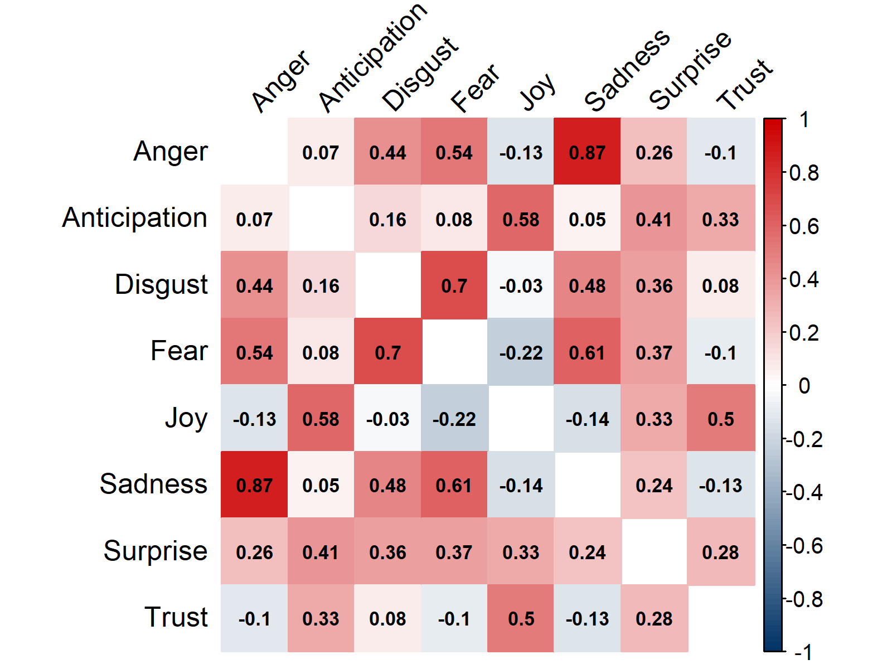

Jenevieve’s Website 🧸🍓
Hello and welcome to my webpage! I’m Jenevieve, Year 1 Communications and New Media major with a minor in Interactive Media Development.
Thank you for visiting!💟
How do emotions evolve throughout the Harry Potter series, including the development of individual characters’ emotional arcs?
for NM2207.
This all started with a particularly interesting question.
Picture this: It’s a rainy afternoon and you’re diving back into the magical world of Harry Potter, when suddenly, a curious question strikes you like a bolt of lightning⚡ - what if we could quantify the emotional impact of each chapter, dissecting the highs and lows with the precision of a potion master?
To do this, I retrieved a preprocessed dataset which contained all Harry Potter books in txt file format, and ran them through an emotion sentiment analyser , a powerful tool promising to unveil the hidden emotional nuances nestled within the text.
The difference between how readers interpret a passage's emotion sentiment and how an emotion sentiment analyser interprets the passage lies in the subjective nature of human emotions and the objective algorithms used by sentiment analysis tools.
Readers’ Interpretation: Readers’ interpretation of emotion sentiment is subjective and influenced by individual experiences, perspectives, and cultural backgrounds. They may perceive emotions differently based on personal context, preferences, and emotional sensitivity.
Emotion Sentiment Analyzer’s Interpretation: Emotion sentiment analysis relies on objective algorithms to analyse text and quantify emotional content. These algorithms are trained on large datasets and use predefined rules or machine learning models to identify and categorise emotional cues in text.
Now, let’s see how the emotion sentiment analyser interprets the Harry Potter series using the data gathered.
⚡️⚯ 🧹
sentimentr Package
The sentimentr package by Tyler Rinker in R is designed to accurately calculate text polarity sentiment at both the sentence and token levels. It offers enhanced precision in sentiment scoring by considering valence shifters like negators, amplifiers, de-amplifiers, and adversative conjunctions.
📜🏰⌛
Exploring Emotional Sentiment Trends
Two Sentiments: Positive and Negative
Sentiment scores typically indicate the presence and intensity of certain emotions.
- Positive sentiment scores represent positive emotions like joy, trust, and anticipation.
- Negative sentiment scores represent negative emotions like anger, fear, and sadness.
These scores provide insights into the emotional tone or mood conveyed in a text, helping to gauge the overall sentiment expressed in the narrative.
By plotting the sentiment score for each chapter of each book, we can clearly mark events in the books.
The three greatest spikes in that chart above are Cedric Diggory’s death at about chapter 88, Sirius Black's death at about chapter 129, and Dumbledore’s death at about chapter 159.
🦁🐍🦅🦡
Eight Basic Emotions: Anger, Disgust, Fear, Joy, Sadness, Surprise, Trust, and Anticipation
Displayed below are line charts illustrating the fluctuation of the emotions throughout the series.
This chart generates for the different emotions one at a time on separate plots, limiting the ability to discern relationships and patterns between different emotional states.
Hence, I included the below chart which allows users to select and compare multiple emotional sentiments on the same plot. This enhancement provides a more comprehensive view of the emotional landscape within the storyline.
👻🧙📖
Emotional Spectrum: Insights in Pie
Moving on from the temporal tracking of emotions, we'll now delve into their distribution within the storyline.
Distribution of Emotions in the Harry Potter Series
The piechart helps to identify which emotions are most prevalent across the series. This could indicate the overall mood or tone of the narrative.
Sadness emerges as the dominant emotion, comprising 21% of the emotional spectrum. Several factors can contribute to the prevalence of sadness in the series:
- Deeply rooted themes of loss and sacrifice.
- Significant personal tragedies experienced by characters.
- Profound sadness and grief evoked by the deaths of beloved characters like Harry's parents, Sirius Black, and Dumbledore.
🧊️🦌🌲
Having identified sadness to be the most prominent emotion in the series, I sought to explore its potential correlations with other emotions in the narrative.
After grasping the overall emotional trends, I shifted my focus to explore the deeper connections among emotions, particularly focusing on sadness.
Investigating Emotional Correlations
We begin by creating a correlation heat map. This visual provides insights into the correlation between different emotional states.
Insights from Correlation Heat map
Emotion Correlation Heat map
Here's an overview of the correlations between emotions as revealed by the heat map.
Emotions with the strongest positive correlations are:
- Anger and sadness at 0.87.
- Disgust and fear at 0.7.
- Sadness and fear at 0.61.
Sadness-centric Line Chart Analysis

- Sadness exhibits the strongest positive correlation with anger (0.87).

- Sadness demonstrates its most notable (albeit weak) negative correlation with joy at -0.14.
The animated line charts juxtapose the emotional trajectories of sadness with anger and joy, highlighting their respective positive and negative correlations as depicted in the correlation heatmap.
The strong positive correlation between sadness and anger (0.87) can be attributed to the complex emotional journeys of characters like Harry Potter and Severus Snape. These characters often experience intersecting emotions in response to various events:
- Harry grapples with the loss of loved ones, personal struggles, and betrayals, which elicit a blend of sorrow and indignation.
- Similarly, Severus Snape's tragic past, conflicted loyalties and redemption arc contribute to his multifaceted emotional landscape, characterised by a mixture of sadness and bitterness.
The weak negative correlation between sadness and joy (-0.14) in Harry Potter may seem counterintuitive at first glance.
- While it is expected for sadness to be negatively correlated with joy, the weak correlation is surprising in the context of Harry Potter.
- It suggests that while there are instances of both sadness and joy in the series, they do not consistently influence each other to a significant degree.
This nuanced understanding underscores the complexity of human emotions within the fictional world of Harry Potter.
🎩🗡🐍
Due to the preprocessing steps* applied to the book data, there was difficulty in accurately discerning character emotions based on dialogue. To counter this, I acquired an alternative dataset containing dialogue from the movie series.
*particularly the removal of symbols, including quotation marks
Determining Character Importance
Quantifying dialogue distribution across characters offers a straightforward method to discerning their importance within the story.
I chose to focus exclusively on the top 10 characters with the most extensive dialogue distributions.
Key Findings from Character Dialogue Distribution Analysis

- Harry naturally assumes 1st place as the protagonist.
- Harry's dialogues dominate each installment in the series as shown by the animated line chart for character dialogue by movie, emphasising his prominence in the series.
However, what's striking is the significant disparity in dialogue lines between Harry and his best friend, Ron.
- Harry's dialogue surpasses Ron's by more than double.
- This highlights the narrative's clear focus on Harry, solidifying his pivotal role to the series.
Another fascinating detail is Voldemort being only 9th place despite his role as the main protagonist. Despite his relatively lower dialogue count, his impact on the narrative is undeniable.
- Voldemort embodies fear, respect, and evil, instilling terror in both characters and readers alike. His character’s presence is so potent that it transcends the need for extensive dialogue.
- His mere existence evokes a sense of foreboding and menace, demonstrating the power of a well-conceived and executed character.
Now that we have established the top 10 pivotal characters in the series, let's take a look at their emotional trajectories.
Can we determine the similarities and variations in characters' experiences based on their emotions?
🚂🧱🛒🏃🏻♂️
Uncovering Unique Emotional Profiles
Comparison of character’s average emotion sentiment scores to identify the characters who exhibit the strongest emotional tendencies across the series.
The data reveals intriguing insights into the emotional dynamics of the central characters.
- Harry emerges with the highest average scores for anticipation, joy, surprise and trust
- Ron exhibits the highest levels of anger, disgust, fear and sadness.
Harry's role as a beacon of hope, resilience, and optimism is contrasted by Ron's surprising depth of emotion and vulnerability that may not be immediately apparent.
This revelation prompts further exploration into Ron's character development, shedding light on the challenges and struggles he faces alongside his friends.
Conclusion
Emotional Distribution
- Prevalence of sadness as a dominant emotion in the series, offers insight into the characters' internal struggles and challenges they face on their journey.
- Exploration of connections between different emotions (such as anger and sadness) provide a deeper understanding of characters' emotional experiences and the complex interplay between different emotional states.
Character Importance and Emotional Tendencies
- Brings to light the pivotal roles of key characters like Harry and Ron.
- Comparative analysis of characters' average emotion sentiment scores reveal Harry's positive emotional tendencies and Ron's depth of negative emotions, unveiling a layer of vulnerability and emotional complexity.